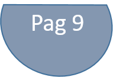
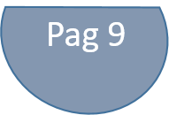

Campañas Existentes (Links de Interés)
No he encontrado campañas sobresalientes en contra de los cuadernos per se, pero las campañas ambientales escolares tienen ideas de qué hacer con los cuadernos de años anteriores, y en general se puede decir que (excluyendo el caso de los libros de texto/trabajo) lo que se hace en estas campañas es reciclar los cuadernos.
|
|